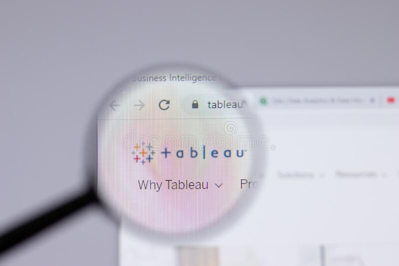

Employing Python, this project encompasses comprehensive stock data analysis, visualisation,
asset allocation, and the application of the Capital Asset Pricing Model (CAPM) for optimal
decision-making.

This project utilizes SQL Server to explore global COVID-19 data, enabling comprehensive analysis
and insights into the worldwide impact of the pandemic..

Python was utilized for data cleaning of video game data, followed by the application of various
machine learning models for predictive analysis..

This project involves customer bank segmentation using unsupervised machine learning techniques.

In this project we take raw housing data and transform it in SQL Server to make it more usable
for analyis.

Tableau dashboards are created to visualize and present the data from my projects effectively